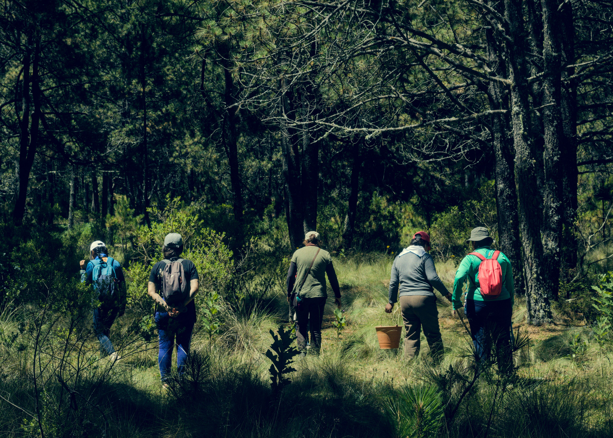
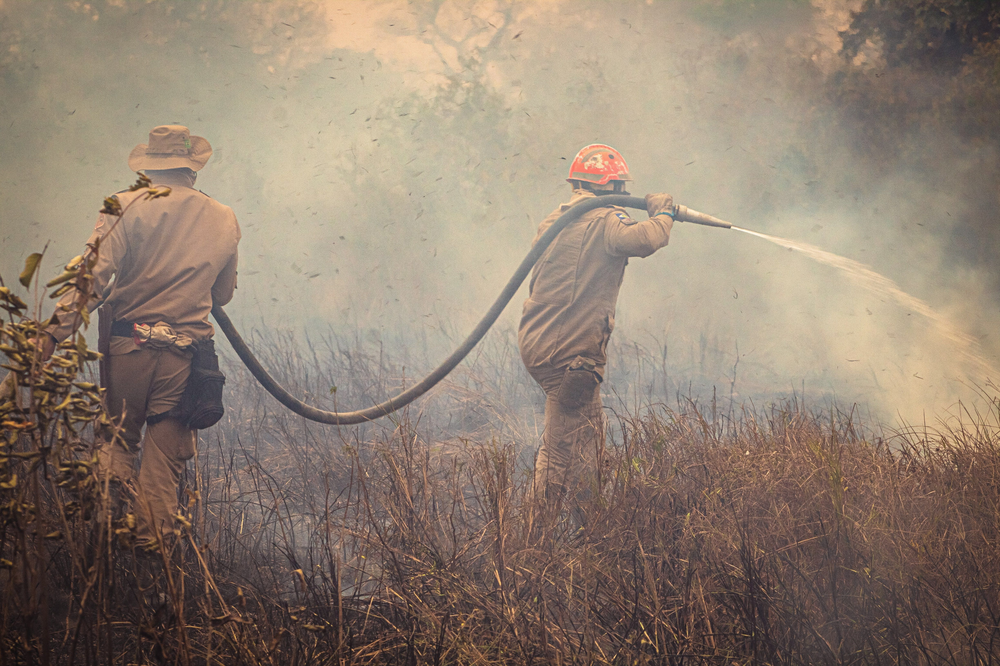
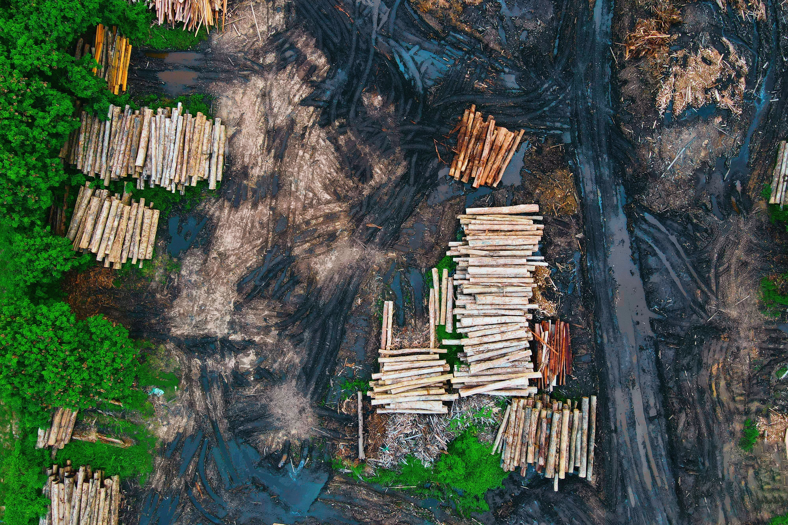
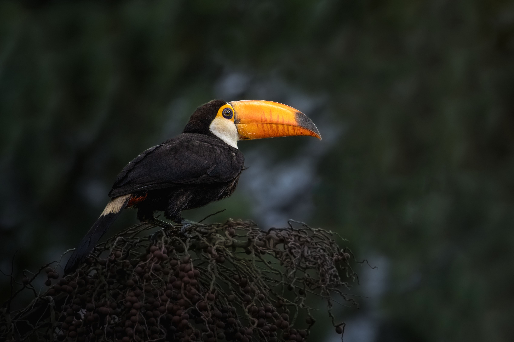
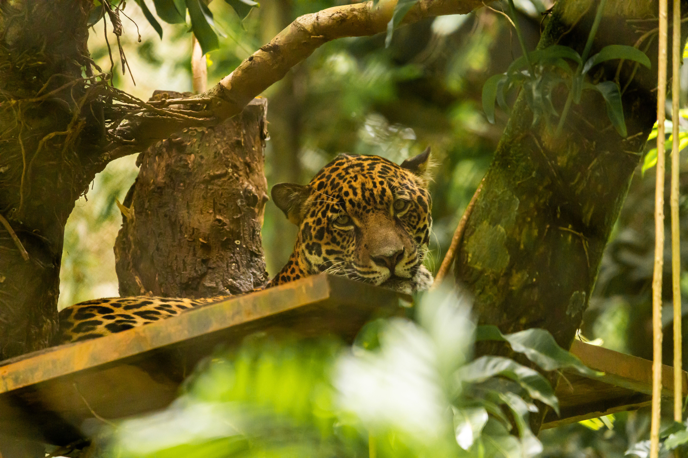
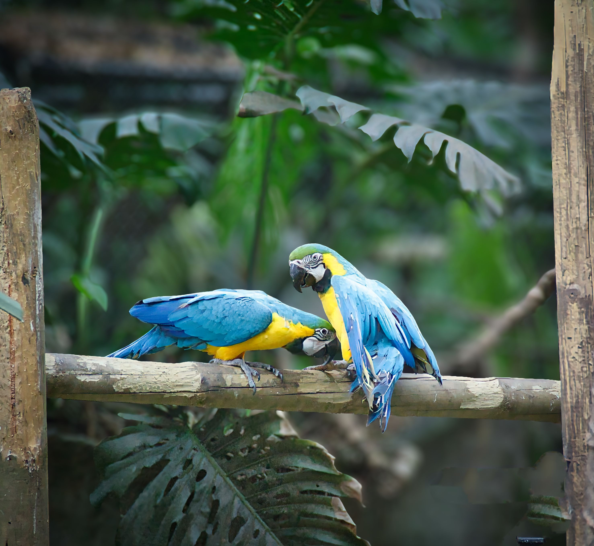
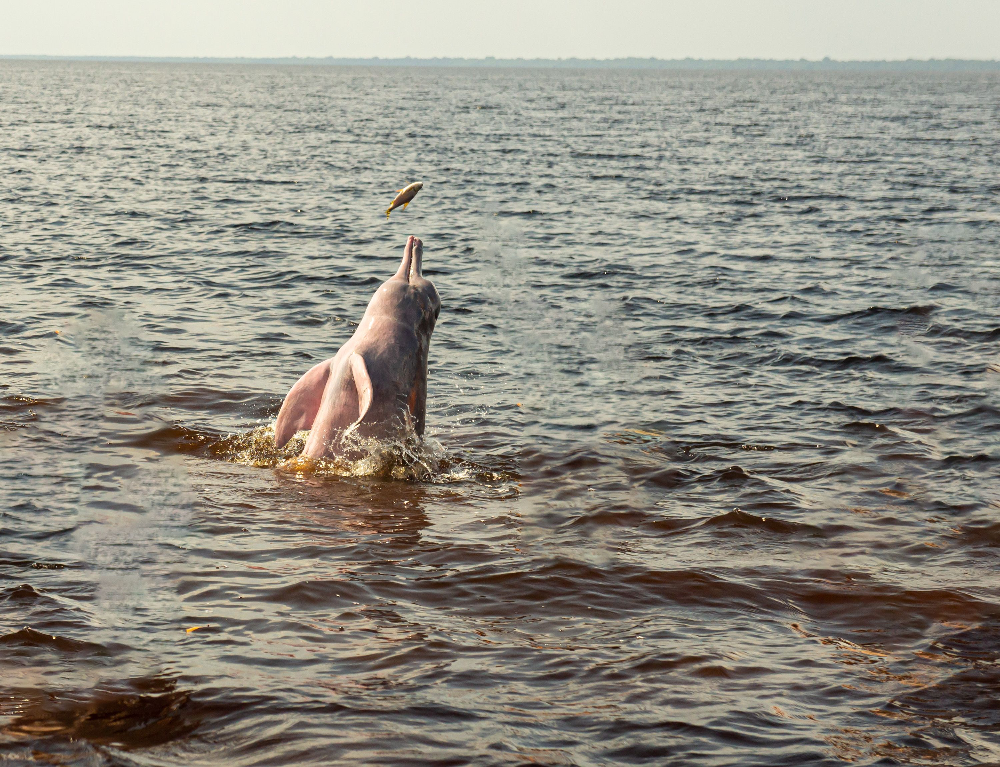
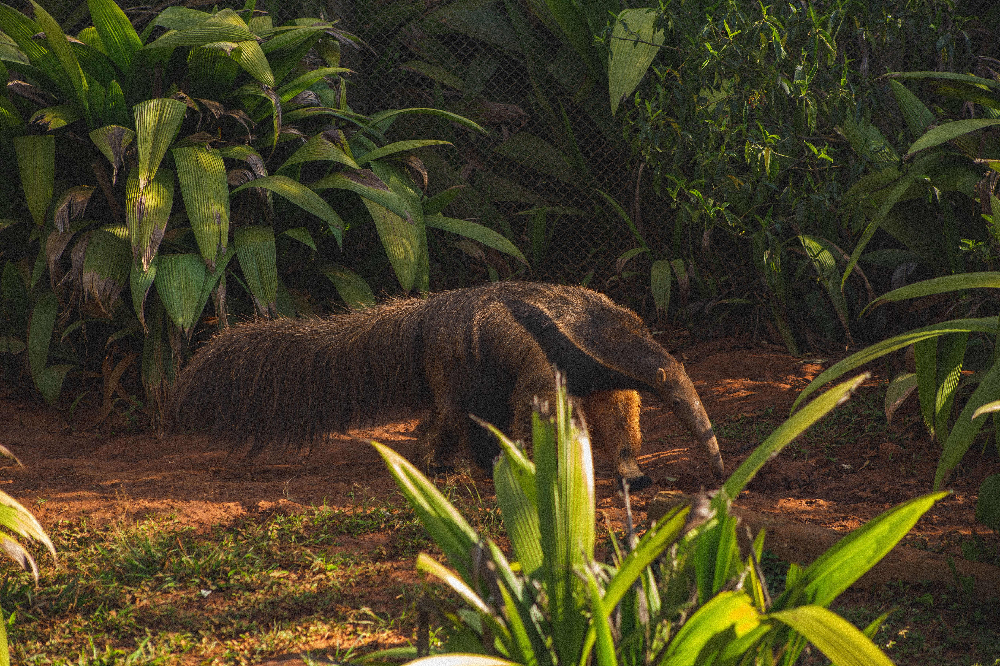

Proteger a Amazônia é proteger a vida.
Defendemos a floresta, protegemos os animais e trabalhamos por um futuro melhor para as próximas gerações.
Faça sua doação!Quem somos?
Uma missão pela vida e pela floresta.
Somos uma organização dedicada à preservação da Amazônia, à proteção dos animais e à conservação da biodiversidade. Acreditamos que cada atitude pode fazer a diferença na defesa do nosso patrimônio natural.
Por meio de projetos ambientais, ações educativas e da participação da sociedade, buscamos combater as ameaças à floresta e incentivar formas mais sustentáveis de viver.
Sobre nós: nossa equipe
Nossa equipe é formada por pessoas comprometidas com a preservação ambiental e a proteção da vida, sob a liderança de Kamille Vieira da Silva. Trabalhamos juntos para promover ações de conscientização e contribuir para a conservação da Amazônia e de sua biodiversidade.
Acreditamos que a união, a responsabilidade e o trabalho em equipe são fundamentais para construir um futuro mais verde e sustentável. Cada integrante contribui com dedicação para transformar essa causa em ações que fazem a diferença.
Nosso compromisso com a Amazônia
Preservar a natureza, valorizar a vida e mobilizar pessoas para construir um futuro mais sustentável.

AS AMEAÇAS À AMAZÔNIA
Uma floresta em risco precisa de atenção.

Queimadas e incêndios
O fogo consome a vegetação, mata ou afasta animais, empobrece o solo e libera fumaça que prejudica a saúde de quem vive nas regiões afetadas.

Desmatamento ilegal
A derrubada da floresta destrói habitats, fragmenta os ambientes naturais e reduz o espaço disponível para inúmeras espécies sobreviverem.

Tráfico de animais
A captura e o comércio ilegal retiram animais de seu habitat, provocam sofrimento e ameaçam a sobrevivência de espécies silvestres.
A Amazônia enfrenta problemas que destroem a floresta, ameaçam os animais e afetam as comunidades que dependem dela. Conhecer essas ameaças é um passo importante para entender por que precisamos agir para proteger esse patrimônio natural.
ALGUNS DOS NOSSOS PROJETOS
Conheça as ações da Preserva Amazonas para proteger a floresta, cuidar dos animais e incentivar a preservação ambiental.
Reflorestamento
Promovemos o plantio de árvores em áreas degradadas para recuperar a vegetação e proteger os habitats naturais.
Saiba maisProteção dos animais
Incentivamos a proteção dos animais silvestres e a conscientização sobre os riscos do tráfico de espécies.
Saiba maisProteção dos rios
Promovemos ações de limpeza, incentivamos o descarte correto de resíduos e conscientizamos a população sobre a importância da água.
Saiba maisVIDA SELVAGEM
A Amazônia abriga espécies incríveis que desempenham papéis essenciais no equilíbrio da natureza. Conheça alguns desses animais.

Onça-pintada
Um dos maiores felinos das Américas, importante para manter o equilíbrio das cadeias alimentares.

Arara-azul
Uma ave de cores marcantes que depende da conservação das florestas para encontrar alimento e abrigo.

Boto-cor-de-rosa
Um mamífero aquático símbolo dos rios amazônicos, ameaçado por ações humanas e pela degradação do ambiente.

Tamanduá-bandeira
Alimenta-se principalmente de formigas e cupins, contribuindo para o equilíbrio dos ecossistemas.
FALE CONOSCO
Quer saber mais sobre a Preserva Amazonas, tirar dúvidas ou conversar sobre formas de apoiar nosso trabalho? Entre em contato com a gente.
Estamos abertos a sugestões, parcerias e ideias que contribuam para a proteção da Amazônia e dos animais que vivem nela.
Nossos contatos
preservaamazonas@gmail.com
Telefone
(83) 97400-7252
Endereço
Rua Padre Ibiapina, s/n, Cajazeiras - PB, CEP: 58900-000.
Ajude a preservar a Amazônia!
Sua doação ajuda a proteger nossas florestas, cuidar dos animais e construir um futuro melhor.
Faça parte dessa causa!
Chave Pix para doação:
preservaamazonas@gmail.com
Qualquer contribuição faz a diferença!